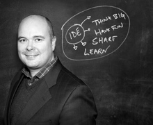

Gamification, as a term, has entered our world recently. However, the applications of that practice goes way back in the history. There is a direct correlation with Flow and psychological aspects of human behaviour, both as individual and as community.
The simplest definition is;
“The use of game elements & game design techniques in non-game contexts.”
And it is;
• Learning from game design techniques
• Appreciating fun, and behavioural psychology
The adventure begins by defining your audience as “players”, not as customers or employees...
...
In this session, we'll be talking about Gamification and its applications onto our world.
09:30 - 10:00
LeanUX - en introduksjon
tord@iterate.no
Forsøke å gi svar på noen sentrale spørsmål: - Hva er brukeropplevelse og hvordan passer det sammen med LEAN-tankemåten? - Hvordan bør interaksjonsdesignere jobbe sammen med andre profesjoner?
10:00 - 10:10
Specification by example og Fitnesse
wien@iterate.no
Fitnesse er et veletablert og kanskje litt tilårskomment verktøy for funksjonell testing av applikasjoner. Jeg ønsker å fortelle litt om hvordan det er å jobbe med Fitnesse og drodle litt om hvordan Fitnesse fungerer i en organisasjon som jobber etter "Specification by example".
Groovy + REST -> it
andrew@iterate.no
* This is a workshop. *
Testing and validating REST services can be time consuming and cumbersome.
This workshop will take participants step by step through the building of a DSL written in Groovy aimed at solving this problem, introducing the language features that makes it all possible.
Participants will be provided with a git repository containing a simple maven project that can be built from the command line.The language features would be introduced step by step, with short exercises for the participants. At the end of the workshop (depending on time) the participants would be faced with a challenge to solve using their newly created DSL.
I will be hosting the REST server which is a simple node.js/mongodb implementation.
The participants would best work in pairs and would need a laptop with maven, and Java installed. Ideally an IDE with a Groovy plugin would also help.
It would be a fairly technical workshop and experience with Java, maven etc would help, although I intend to make it as easy as possible, with working examples in the source tree.
10:10 - 10:20
Hva er kvalitet?
rune@iterate.no
Litt refleksjon rundt hva man mener med kvalitet.
Groovy + REST -> it
andrew@iterate.no
* This is a workshop. *
Testing and validating REST services can be time consuming and cumbersome.
This workshop will take participants step by step through the building of a DSL written in Groovy aimed at solving this problem, introducing the language features that makes it all possible.
Participants will be provided with a git repository containing a simple maven project that can be built from the command line.The language features would be introduced step by step, with short exercises for the participants. At the end of the workshop (depending on time) the participants would be faced with a challenge to solve using their newly created DSL.
I will be hosting the REST server which is a simple node.js/mongodb implementation.
The participants would best work in pairs and would need a laptop with maven, and Java installed. Ideally an IDE with a Groovy plugin would also help.
It would be a fairly technical workshop and experience with Java, maven etc would help, although I intend to make it as easy as possible, with working examples in the source tree.
10:20 - 10:30
Experience report: Growth hacking at Comoyo
haugeto@iterate.no
Comoyo View uses some tools and techniques for improving their sales pipeline: Banners, mail distribution and so-called "below the line" (cheap) marketing campaigns. We use intel from such tools to improve the rate of acqusition (new customers) and retention (keeping customers) for View.
While the tools are simple enough seen in isolation, working with them on View has provided some experiences relevant for instance when driving traffic to a new product or service (from solution- towards scale- phases of a Lean Startup).
This talk is semi tech semi marketing. Or I suppose #growh_hacking would be another way to describe it.
Groovy + REST -> it
andrew@iterate.no
* This is a workshop. *
Testing and validating REST services can be time consuming and cumbersome.
This workshop will take participants step by step through the building of a DSL written in Groovy aimed at solving this problem, introducing the language features that makes it all possible.
Participants will be provided with a git repository containing a simple maven project that can be built from the command line.The language features would be introduced step by step, with short exercises for the participants. At the end of the workshop (depending on time) the participants would be faced with a challenge to solve using their newly created DSL.
I will be hosting the REST server which is a simple node.js/mongodb implementation.
The participants would best work in pairs and would need a laptop with maven, and Java installed. Ideally an IDE with a Groovy plugin would also help.
It would be a fairly technical workshop and experience with Java, maven etc would help, although I intend to make it as easy as possible, with working examples in the source tree.
10:30 - 10:40
Case Based Reasoning - en kort innføring
osmund@iterate.no
Case Based Reasoning (CBR) er en teknologi/metodologi som går ut på å gjenbruke tidligere erfaringer til å løse nye problemer. Fagfeltet har sitt oppgav i kunstig intelligens og forskning på kognitive prosesser i menneskehjernen. Målet med dette bidraget er å gi en kort og grei innføring i hvordan CBR fungerer, hva denne typen teknologi kan brukes til, og å introdusere CBR som et mulig verktøy i reportoiret til publikum.
Groovy + REST -> it
andrew@iterate.no
* This is a workshop. *
Testing and validating REST services can be time consuming and cumbersome.
This workshop will take participants step by step through the building of a DSL written in Groovy aimed at solving this problem, introducing the language features that makes it all possible.
Participants will be provided with a git repository containing a simple maven project that can be built from the command line.The language features would be introduced step by step, with short exercises for the participants. At the end of the workshop (depending on time) the participants would be faced with a challenge to solve using their newly created DSL.
I will be hosting the REST server which is a simple node.js/mongodb implementation.
The participants would best work in pairs and would need a laptop with maven, and Java installed. Ideally an IDE with a Groovy plugin would also help.
It would be a fairly technical workshop and experience with Java, maven etc would help, although I intend to make it as easy as possible, with working examples in the source tree.
10:40 - 10:50
Failure is the only option if success is the end goal
singh@iterate.no
This talk is about the latest project I was in. It was going to be our last delivery before we were off the project. We were saddened by the fact that the customer had shut down the project for now, but this just gave us an extra motivation for finishing off with a killer delivery. There was a lot of prestige and pride in this, and we were confident that we could make it. The deadline was clear and there was very little time. We had assembled a small but very effective team, where each of us had the necessary skills, the team had high spirits and a thirst for success. There was just not any room for failure...or was there?
It is human to fail they say, and fail we did. But failures are also one form of success, in the fact that it gives us great knowledge. And with knowledge comes success. When you stop learning, you stop developing and you stop growing. Although we did fail, we learned a lot of great lessons in the very short time the project was scheduled. These valuable learnings are from various core parts of a project, seen from the perspective of a tech lead.
Why did we fail? Why did the speed of delivery slow down between every iteration? How did the project lead act, how did various team members act? What actions did we take to try to meet the deadline? What could we have done better? These are some of the questions which I will try to answer in this lightening talk.
Groovy + REST -> it
andrew@iterate.no
* This is a workshop. *
Testing and validating REST services can be time consuming and cumbersome.
This workshop will take participants step by step through the building of a DSL written in Groovy aimed at solving this problem, introducing the language features that makes it all possible.
Participants will be provided with a git repository containing a simple maven project that can be built from the command line.The language features would be introduced step by step, with short exercises for the participants. At the end of the workshop (depending on time) the participants would be faced with a challenge to solve using their newly created DSL.
I will be hosting the REST server which is a simple node.js/mongodb implementation.
The participants would best work in pairs and would need a laptop with maven, and Java installed. Ideally an IDE with a Groovy plugin would also help.
It would be a fairly technical workshop and experience with Java, maven etc would help, although I intend to make it as easy as possible, with working examples in the source tree.
11:00 - 11:30
Are You Too Driving Blind In The Land of Project Management?
jakub@iterate.no
If you don't know where you are and have only a vague idea of where you are going then you are like a blind driver. At this talk you will learn how to open your eyes, define your goal clearly, measure where you started and how far you have got. You will gain power, flexibility, and clarity you couldn't even imagine. You will realize that most projects are driven by (half-)blind people and hopefully will be able to help them open their eyes.
#engineering #projectmanagement #impact
Groovy + REST -> it
andrew@iterate.no
* This is a workshop. *
Testing and validating REST services can be time consuming and cumbersome.
This workshop will take participants step by step through the building of a DSL written in Groovy aimed at solving this problem, introducing the language features that makes it all possible.
Participants will be provided with a git repository containing a simple maven project that can be built from the command line.The language features would be introduced step by step, with short exercises for the participants. At the end of the workshop (depending on time) the participants would be faced with a challenge to solve using their newly created DSL.
I will be hosting the REST server which is a simple node.js/mongodb implementation.
The participants would best work in pairs and would need a laptop with maven, and Java installed. Ideally an IDE with a Groovy plugin would also help.
It would be a fairly technical workshop and experience with Java, maven etc would help, although I intend to make it as easy as possible, with working examples in the source tree.
11:30 - 12:00
Erfaringer ved bruk av Kissmetrics i Comoyo
barlindhaug@iterate.no
Comoyos nye streamingtjeneste View har tatt i bruk Kissmetrics som en rask og enkel måte å følge brukerne på og følge utviklingen av noen pirate metrics (acquisition, activation, retention) og tiden det tar fra man kommer inn på siden til man begynner å se en film.
Etter flere måneder i bruk og mye justering av events som blir sent gir det oss ikke korrekte data i alle tilfeller, selv om Kissmetrics hevder å kun gi oss akkurat de dataen.
Hva har blitt gjort feil? Og hva har fungert bra?
Lean Star-up i Elixia
torve@iterate.no
Erfaringer fra å gjennomføre Lean Start-up fra A til Å, Case Elixia

13:00 - 13:30
Marionette - Fornuftig struktur til BackboneJS apps
palru@iterate.no
Det er lett å gå seg vill første gang man trår inn i en ny og mørk skog. Etterhvert lager man seg mentale stier, og finner raskere veien fram til målet.
Slik er absolutt tilfellet også med Backbone. Kan man veien er det et effektivt bibliotek som samtidig gir deg full kontroll. Nye utviklere ender dessverre ofte opp på de samme bratte, vanskelige og farlige stiene.
Men hva om jeg forteller deg at det finnes et kart og kompass for Backbone-skogen?
Innovation
iselin@iterate.no
Some essential features of innovation and real-life examples of its continuous importance for successful business.
13:30 - 14:00
Haskell
jakob@iterate.no
Haskell is a purely functional programming language. In this talk I explore the language from a Scala-programmers perspective. What similarities do the two languages have if any? What are the advantages and disadvantages from the two languages as I see them? During my studies I have found that Haskell has a simple syntax which I believe is a big advantage when learning concepts of functional programming. I hope that this introductory talk will give the audience some new insights in functional programming as a "side effect".
Business Model Canvas - Workshop
rune@iterate.no
* This is a workshop. *
Vi bruker Osterwalders Business Model Canvas og mapper eksisterende bedrifters modeller til canvaset og utforder oss til å lage nye modeller.Kort intro til Business Model Canvas (Video).Vi samles rundt canvaset og deltar. Jeg holder regien og sørger for fremdrift. Vi trenger en stor canvas, store post-it og penner. Grupper over 5-6 burde kanskje splittes opp.
Kan sikker bruke litt mindre en 3 timer også.
14:00 - 14:30
Scaling GET
klette@iterate.no
Erfaringsrapport fra en kompleks stack som brått måtte kunne håndtere langt flere kunder og mer komplekse operasjoner enn noen sinne.
Business Model Canvas - Workshop
rune@iterate.no
* This is a workshop. *
Vi bruker Osterwalders Business Model Canvas og mapper eksisterende bedrifters modeller til canvaset og utforder oss til å lage nye modeller.Kort intro til Business Model Canvas (Video).Vi samles rundt canvaset og deltar. Jeg holder regien og sørger for fremdrift. Vi trenger en stor canvas, store post-it og penner. Grupper over 5-6 burde kanskje splittes opp.
Kan sikker bruke litt mindre en 3 timer også.
14:30 - 15:00
iOS7 madness
susannmo@iterate.no
Presentation on how to make a simple iOS7 application.
Business Model Canvas - Workshop
rune@iterate.no
* This is a workshop. *
Vi bruker Osterwalders Business Model Canvas og mapper eksisterende bedrifters modeller til canvaset og utforder oss til å lage nye modeller.Kort intro til Business Model Canvas (Video).Vi samles rundt canvaset og deltar. Jeg holder regien og sørger for fremdrift. Vi trenger en stor canvas, store post-it og penner. Grupper over 5-6 burde kanskje splittes opp.
Kan sikker bruke litt mindre en 3 timer også.
15:15 - 15:25
Apache Camel
ole@iterate.no
En kort presentasjon om hvordan Apache Camel ble brukt i et kundeprosjekt og hvordan ha det gøy med Camel: - Utfordringer - Erfaringer
- Fun & Profit
Bli med på Lean Startup-spillet
jorgensen@iterate.no
* This is a workshop. *
Hva er egentlig Lean Startup? Hvilke sjelevrengende valg og beslutninger må man ta for å lykkes i et marked fylt av dyktige konkurrenter?
Bli med på en runde med Lean Startup-spillet, Iterates aller første egenutviklede brettspill, så finner du svarene du leter etter.Tja, mer enn 8 deltagere tror jeg blir upraktisk. Jeg trenger bare et bord.
15:25 - 15:35
“Kodejuveler”
dag@iterate.no
Noen eksempler på “juveler” funnet i forskjellige applikasjoner jeg har hatt gleden av å forvalte de siste årene.
Bli med på Lean Startup-spillet
jorgensen@iterate.no
* This is a workshop. *
Hva er egentlig Lean Startup? Hvilke sjelevrengende valg og beslutninger må man ta for å lykkes i et marked fylt av dyktige konkurrenter?
Bli med på en runde med Lean Startup-spillet, Iterates aller første egenutviklede brettspill, så finner du svarene du leter etter.Tja, mer enn 8 deltagere tror jeg blir upraktisk. Jeg trenger bare et bord.
15:35 - 15:45
Kaizen hos Broadnet
ivar@iterate.no
Det hender ofte man som konsulent befinner seg i en situasjon man ser på som suboptimal. Det finnes mange måter å endre situasjonen til det bedre, men hvordan gjør man det i praksis? Dette blir en kort gjennomgang av tiltak jeg gjorde hos Broadnet for å forbedre utviklingshverdagen.
PS: vet det er lang over fristen, men jeg vil heller snakke om dette enn IntelliJ vs Eclipse om det er mulig.
Bli med på Lean Startup-spillet
jorgensen@iterate.no
* This is a workshop. *
Hva er egentlig Lean Startup? Hvilke sjelevrengende valg og beslutninger må man ta for å lykkes i et marked fylt av dyktige konkurrenter?
Bli med på en runde med Lean Startup-spillet, Iterates aller første egenutviklede brettspill, så finner du svarene du leter etter.Tja, mer enn 8 deltagere tror jeg blir upraktisk. Jeg trenger bare et bord.
15:45 - 15:55
Tid og adresser i meatspace
eide@iterate.no
På en gate har alle hus unike numre. Etter et år kommer neste år. Skuddår er hvert fjerde år. Et hus er alltid på en gate med navn.
Og andre feiltagelser vi programmerer inn i systemene våre.
Vi ser på tid og adresser fra et programmeringsperspektiv, og hvor lite logisk vi har klart å lage det hele.
Bli med på Lean Startup-spillet
jorgensen@iterate.no
* This is a workshop. *
Hva er egentlig Lean Startup? Hvilke sjelevrengende valg og beslutninger må man ta for å lykkes i et marked fylt av dyktige konkurrenter?
Bli med på en runde med Lean Startup-spillet, Iterates aller første egenutviklede brettspill, så finner du svarene du leter etter.Tja, mer enn 8 deltagere tror jeg blir upraktisk. Jeg trenger bare et bord.
15:55 - 16:05
Få kontroll over loggene dine
morten@iterate.no
Find, grep, sed og awk er kule verktøy, og veldig ofte det første en tyr til når en skal søke i loggfiler. Men det kommer dessverre for kort til opp mot verktøy som visualiserer innholdet i loggene dine.
Jeg skal i denne lyntalen vise fram Logstash og Elastic Search med Kibana. Dette er verktøy som indekserer loggene dine og visualiserer dem i et brukergrensesnitt som enkelt lar deg sammenstille, filtrere og drille ned i utvalgte hendelser.
Bli med på Lean Startup-spillet
jorgensen@iterate.no
* This is a workshop. *
Hva er egentlig Lean Startup? Hvilke sjelevrengende valg og beslutninger må man ta for å lykkes i et marked fylt av dyktige konkurrenter?
Bli med på en runde med Lean Startup-spillet, Iterates aller første egenutviklede brettspill, så finner du svarene du leter etter.Tja, mer enn 8 deltagere tror jeg blir upraktisk. Jeg trenger bare et bord.
16:05 - 16:15
Auto-magic Backend
viktor@iterate.no
Det er mange rammeverk som i dag generer opp et komplett administrasjonsverktøy utifra en gitt datamodell -- Django, Ruby-on-Rails, CakePHP for at nevne noen. Bruker man ikke noe av disse er man uthengt. Men hvorfor er det slik?
Hadde det ikke vart mulig at i stedet applisere en «design-first» modell der man automagiskt skaper en datamodell og tilhørende administrasjonsgrensesnitt utifra kun en template for at få en liknende rammeverksagnostisk løsning slik at man kjapt kan teste ut og bygge tjenester uten alt CRUD som blir medført ellers?
Bli med på Lean Startup-spillet
jorgensen@iterate.no
* This is a workshop. *
Hva er egentlig Lean Startup? Hvilke sjelevrengende valg og beslutninger må man ta for å lykkes i et marked fylt av dyktige konkurrenter?
Bli med på en runde med Lean Startup-spillet, Iterates aller første egenutviklede brettspill, så finner du svarene du leter etter.Tja, mer enn 8 deltagere tror jeg blir upraktisk. Jeg trenger bare et bord.